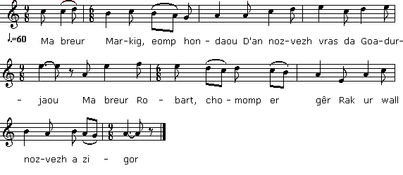

Paotred an Euret
Les frères Euret
Texte recueilli par Théodore de La Villemarqué
auprès d'Anne Penven, épouse Gourlaouen (1815-1888) de Kernonen-en -Nizon,
Page 307 du 1er carnet de Keransquer. Non publié

Mélodie
"Mibien Eured", recueilli par Duhamel, "Musiques Bretonnes, p.83, N°165
Chanté par Menguy et Léon
Arrangement Christian Souchon (c) 2014
Source: site de Pierre Quentel
| La Villemarqué | Luzel | Mme de Saint-Prix | Français |
|---|---|---|---|
|
P. 307 PAOTRED AN EURET 1. Selaouit holl, O selaouit, (div w.) Ur zonig nevez zo savet! (div w.) 2.Ur zonig nevez, hep lared gaoù War paotred an Euret o daou. 3. Ur zañson nevez zo savet, A zo sa'et da baotred Euret; 4. Savet war paotred Euret o daou Eont da fest an noz Goadeurjaou. 5. Er-maez pa oant o partiañ, Tan a gurun an horuplañ! 5 bis. Tan a gurun an horuplañ! Hag an holl c'hleier o brallañ. 6. - Ma breur Roparz, chomit er ger, Kar ur gwall nozvezh a giser. 7. - Na, chom er ger me ne ran ket, M'am-eus lar't mond. Rañkon moned. P. 308 8. Barzh Koadeurjaoù pa oa degouet, Oa aet holl an dud da gousked. 9. - Treier, digorit an nor din M'am-bezo tan evit fumiñ - 9 bis. Digor an nor din, va Komper, Da lak'd an tan war va fipenn. 10. - Ma dor d'eoc'h na zigorin ket Kar me glev lar'd oc'h gwall baotred. 11. - O ni n'emaomp ket gwall baotred O na gwall deodoù kenneuded! 12. Malloz ran d'an gwall deodoù: Panevete vin digor pell-zo! 13. Treier, digorit an nor din, Peotramañt me he zaolo barzh an ti! - 13 bis. N'oa ket e c'homz peurlaret An nor en ti en-doa taolet, 14. An nor en ti en-doa taolet, Ha Treier koz en-deus lazhet. 15. Merc'h an Treier a lavare 'Vont war he c'hoste 'n he gwele 15 bis. Mari-Veronik a lare Barzh 'n he gwele war he c'hoste: 16. - Pa goustfe din-me pemp kant skoed, Ma lako krougañ Roparz Eured! 17. Ma Fantig bihan n'en-do droug ebet Kar hennezh rankan da gaoued. - P. 179 18. N'oa ket un hanter eur sonet, Daou archer en ti-se oant degouet. 18 bis. Triwec'h archer er porzh oa rañtreet. Kombatiñ d'outo o-doa graet. 19. - Me n'on ket boemet gant archerien, Pa 'fent daou-ugent pe pemp-kant 'n ur vandenn. 20. Paotred Euret n'int nec'h er-bed, Keit a ma-vo Gwener er bed. ************************************** 1. Ecoutez tous, O écoutez (bis) Ce chant récemment composé! (bis) 2. Un chant récent, et je dis vrai Sur les deux fameux gars d'Euret. 3. Un chant nouveau que l'on a fait A propos des deux gars d'Euret. (A) Marc Euret ce soir-là disait Quand il s'apprêtait à entrer: (B) Ils sont retournés dans la maison Et ils ont tué tout le monde. (C) Ils y ont tué tout le monde Et y ont mis le feu. (D) Les 18 gendarmees demandaient Arpentant les pavés du hameau: (E) - Dites-nous, les jeunes, Vous, vous les avez vus les fils Euret? (F) - Revenez par ici, vous les verrez: Je crois même que c'est à eux que vous parlez. - (G) Ils en ont tué dix-sept A part un, il n'en restait plus. (H) Marc Euret a dit alors A ce survivant: (I) Un gendarmee de 17 ans A dit alors à son pauvre aîné: (J) - Collègue, dis-moi donc, Où étais-tu? Et où vas-tu comme ça? (K) - Arrêter les fils Euret Ils ont tué 17 d'entre nous. (L) Ils m'ont laissé la vie sauve Pour que j'aille chercher du renfort. - (M) Le gendarmee de 17 ans a dit A son confrère: (N)- Je vais y aller moi aussi Voir si, seul, je pourrai les arrêter. (O) - Revenez par ici, vous les verrez: Je crois même que c'est à eux que vous parlez. (P) Deux heures et demie durant Ils ont ferraillé: sabre et épée. (Q) Le gendarmee de 17 ans A dit alors à Robert Euret: (R) - Jamais je n'ai rencontré d'adversaire A ma taille, qui soit né d'humains. (S) Jamais, aucun être humain, Si ce n'est ton frère, Marc Euret. (T) Comme il disait ces mots, Marc Euret est arrivé. (U) A 18 pieds de hauteur Marc Euret bondit en l'air, (V) Marc Euret bondit en l'air A la rencontre du gendarmee de 17 ans. (W) Trois heures et demie durant Ils ont ferraillé: sabre et épée. (X) Lorsque quatre heures sonnèrent, Le gendarmee sentit le souffle lui manquer. (Y) Marc Euret a dit alors A son frère Robert: (Z) - Ton compte était bon, mon frère, Si ce brave Marc Euret n'avait pas été là! (Z bis) Allez, on va se coucher! On s'est assez battu pour aujourd'hui! - ************************** Troidigezh : a-geñver an destenn orin dornskrivet gant an Itron de Saint-Prix war ar follennoù 83. r, 83. v & 84. r, e oa bet ouzhpennet un droidigezh er marz dehoù. Adkavout a reer skritur an den e oa bet skrivet ha troet ar werz "Kerveguen hag an Tourellou" gantañ (adkavet e vo an droidigezh-se amañ da heul, ha kinniget e vo evel ma kaver anezhi skrivet er skrid orin, da lâret eo gant e fazioù!) Ouzhpennañ a ra Luzel dar stumm-se, er GBI, un droidigezh en galleg gant Hippolyte Violeau, tennet eus e levr "Pelerinage de Bretagne", eus ar werz-mañ ivez : kanet e oa bet dezhañ gant ur glaouer eus forest Quénécan: « Il dit lavoir entendu chanter à un charbonnier de la forêt de Quénécan, natif de la commune de Séglien, où se trouvent les ruines du château de Coat-an-Fao." Cette gwerz a pu inspirer certains passages de Lez-Breizh (En particulier, le "Maure du roi"). La version manuscrite de Mme de Saint-Prix se retrouve dans le manuscrit 92 de Penguern '"Breudeur Euret"), chez J. Ollivier et I. Le Diberder (carnet 1). ************************************** Une seconde version de ce chant intitulée "k114. Son Koad-ar-Jaou" a été collectée par La Villemarqué après 1840. Elle est consignée dans le 2ème carnet de collecte, pp. 111-112. A second version of this ballad titled "k114. Son Koad-ar-Jaou" was gathered by La Villemarqué after 1840. and recorded in his 2nd collecting book on, pp. 111-112. |
MIBIEN EURET I (4) - Ma breur Markig, eomp hon daou D'an nozvezh vras da Goadurjaou (6) - Ma breur Robart, chomomp er gêr, Rag ur gwall nozvezh a zigor. (7) - Na chomfomp, ha na dalefomp, P'hon eus koñje, mont a refomp. (5) Ha pa oant prest da bartiañ, 'Komañs ar c'hleier da vrallañ (5 bis) Komañs ar c'hleier da vrallañ, Tan ha kurun an horruplañ. II (8) En Koadurjaou p'int arruet, An nor serret o deus kavet (8) An nor serret o deus kavet, Holl dud an ti aet da gousket. (A) Markig Euret a lavare En toull an nor, hag en noz-se (9) - Ma c'homper, digorret-c'hwi din, Evit am bo tan da fumiñ. (10) - An nor deoc'h na digorin ket, Klevet am eus oc'h gwall-baotred. (13) N'oa ket e c'her peurlavaret, An nor en ti o deus taolet ; (14) An nor en ti o deus taolet, An Trikier kozh o deus lazhet. (15) Merc'h an Trikier a lavare Diwar hec'h ilin, 'n he gwele (16) - Ha pa goustfe din pemp mil skoed, Me 'lakay krougañ Robart Euret ! (17) Me 'lakay krougañ Robart Euret, E vreur Markig na laran ket ; (17) E vreur Markig na laran ket, Hennezh a rankan da gavet. (B) War o c'hil en ti int bet aet, Holl dud an ti o deus lazhet (C) Holl dud an ti o deus lazhet, An tan warn'e o deus lakaet III (18 bis) Triwec'h archer a zo kaset Da vont da gemer mibien Euret. (D) An triwec'h archer 'c'houlenne, Er gêr vihan, war ar pave : (E) - Paotred yaouank, dimp-ni laret C'hwi 'c'h eus gwelet mibien Euret (i) - Mar eo paotred Euret 'glasket, Distroet amañ, o gwelfet ; (F) Distroet amañ, o gwelfet, Me gred eo oute e komzet. (j) Teir eur hag hanter ez int bet 'C'hoari ar c'hleze, ar fleured ; (k) 'Benn ma oa peder eur sonet, Seitek an'e a oa lazhet ; (G) Seitek an'e a oa lazhet, Nemet unan na eus chomet. (H) Markig Euret a lavare D'an hini oa chomet, neuze (m) - Me a lez ganit da vuhez, D' vont da glask sikour adarre. IV (I) Un archer seitek vloaz 'lare D'an archer paour, pa hen gwele: (J) - Ma breur archer, din-me laret, Pelec'h oc'h bet, pelec'h ma 'z et (n bis) - Triwec'h archer a oamp kaset D' vont da gemer mibien Euret ; (K) D' vont da gemer mibien Euret, Seitek ac'hanomp 'zo lazhet ; (n ter) Seitek ac'hanomp 'zo lazhet, Nemet on-me na eus chomet (L) O deus lez't ganin ma buhez, D' vont da glask sikour adarre. (M) An archer seitek vloaz 'lare D'e vreur archer eno, neuze: (N) - Me ez a ma-unan ivez, Da c'houd ha me o aerefe. (o) An archer seitek vloaz 'c'houlenne, Er gêr vihan pa arrue : V (s) - Paotred yaouank, din-me laret, C'hwi 'c'h eus gwelet paotred Euret ? (u) - Mar eo mibien Euret 'glasket, Distroet amañ, o gwelfet ; (O) Distroet amañ, o gwelfet, Me 'gred eo oute e komzet. (P) Div eur hag hanter ez int bet 0 c'hoari 'r c'hleze, ar fleured, (18) Ha 'benn ma oa teir eur sonet, Robart Euret 'oa aereet. (Q) An archer seitek vloaz 'lare Da Robart Euret, en deiz-se : (R) - Biskoazh ma far n'am eus kavet, Biskoazh gant mamm n'eo bet ganet ; (S) Biskoazh gant mamm n'eo bet ganet, Nemet da vreur Markig Euret. (T) N'oa ket e c'her peurlavaret, Markig Euret 'zo arruet. (U) Triwec'h troatad a uhelder A lamp Markig Euret en aer ; (V) A lamp Markig Euret en aer, 'N archer seitek vloaz 'n e geñver. (W) Teir eur hag hanter ez int bet 0 c'hoari 'r c'hleze, ar fleured ; (X) Barzh ma oa peder eur sonet, E alan d'an archer 'zo manket. (Y) Markig Euret a lavare D'e vreur Robart, eno, neuze (Z)- Aze, ma breur, e oas tiet, Penamet 'r paotr-mat Markig Euret (Z bis) Eomp bremañ d'hon gwele da gousket, Pa eo ar gombad achuet Luzel a recueilli les paroles de cette chanson auprès de Garandel, surnommé "Compagnon l'Aveugle", à Plouaret, en 1845 ; Publié en 1874 dans "Gwerzioù II", p.308 sous le titre: "Les fils de'Euret". |
ROGART HA MARKIG EURED, I (4) m'ha breur rogard demni hon daou d'har nosvez bras, d'ha Coat ar jaou (6) m'ha breur Marcic, chommomp er guer Kar ur goall nosvez ha digair (7) n'ha chommiamp, n'ha chommiamp p'ha meup congé, mont he réomp (7 bis) ar mestr' bras neus roet congé red ho dimp ébattel fet deiz (7 ter) mes fété drouc d'ha den n'he rimp nemeit selled fall he vey ouzimp (5) p'ha woainc he hont d'ha partian commanç ar cleyer d'ha bralan (5 bis) ar curen an avel, an tan ur nosvez an horruplan II (8) p'ha n'arrujoinc hen Coat ar jaou he woa serret an norréjou (8) ed he woa an oll dud d'ha cousquet d'ha toul dor an tetic, ing bed ed (9) m'ha comper digor an nor d'hin er maës n'ha padfe quet ur c'hi (10) m'ha dor, dac'h, n'he digorrin quet clevet emeus, he woac'h fâchet. (a) ac ouspen se, oc'h goall pautret ar bro man, ho peus distruget. (b) m'ar n'he digorras n'hi torro, tan or meup ezom d'ha tommo (14) an dor en ty ho deus tollet an tetic coz ho deus Lazet (15) mary an titic, he woa hen he guele woar he hillin, ho sellet ountè (c) Staguet he woa gant ur gorden n'alle finval, nemeit he pen (16) hac he cousteffé dim he pemp cant scoet m'he Laquei crouga rogard euret (d) rogard euret zo distroet mary traiter a zo tranclet (e) ar map brassan ho deus tranclet an hini bihan ha neus reded (f) d'ha glasq archerien, he woa pelzo ho clasq tapout potret Euret enno (g) querquent an tân ho deus Laquet quement ha woa en Ker, a zo devet III (18 bis) triwouach archers, a zo arruet evit quemer pautret Euret (h) marcic Euret, evelt m'ho clevas emaës an ty he disaillas (i) m'ar eo pautret Euret, he clasquet chetu n'hin, aman, arruet, ha prest (j) teir heur anter he hing bed choari musclet, choari ar fleured (k) n'he woa quet teir heur anter sonnet Seitec archer, ho deveus lazet (l) nemeït unan coz ho deus lezet d'ha vont d'ha chonta, ho marvaillet (m) ganut thé, he Lezomp ar buhe quers d'ha clasq, souten adarre IV (n) an archer coz ha deplore ebars en Ker, p'ha arrue (n bis) triwoach archer n'hi a zo bed ho clasq quèmer pautred Eured (n ter) Seitec mignon d'hin zo Lazet n'ha nemeidon, n'hon deus preservet (o) ur archer seitec bloas, p'ha clevas digant ar mestr' he choulennas (p) m'ha mestr' m'he o ped m'ha lezet donnet d'ammari potret euret (q) n'he meus affer sicour abed evit tappout potret euret (r) woar c'heing he march, héon zo pignet er guer bihan, eo nom rentet V (s) Salud d'ach, tud deus ar guer man ar pod euret, pelec'h eman (t) rogard euret p'ha neus clevet emaès an ty, eo dilampet (u) m'ar eo pod euret ha clasquet chetu han, aru prest meurbed (v) rogard euret zo diblanted gant an archer yauanc, eo garotted (w) ho chouari ar baz ac ar fleuret he neuz gonned woar pod euret (x) an archer yauanc, ha triumphe d'ha rogard euret he lavare (y) m'he a vo mestr an archerien rogard, p'ho deud ahannoud a benn (z) marcic euret he woa an ty ha diredas evelt ur c'hi (aa) n'hom sicour c'hoas, rogard euret p'hé nevidon he woas quemeret (T) n'he woa quet he guier peur achuet an archer yauanc, a neus LaKet (U) triwoac'h troated, demeus ha hed ha quement all, ha ledandred (V) he lamp, ar pod marcic euret enez biquen, n'he vo tappet (bb) Kar triwouach troated ha hueldred ha nom gavont en plaç pepret (cc) nersus, ing deus ha c'horf, ha bley n'he woa den, evit quemer an hey VI (dd) p'ha hey pautret euret dre ar ru ho serre, an norrejet ha pep tu (ee) pautret euret ha tréméné Kaer an naonnet, en creiz an deiz (ff) pelec'h eman justic ar guer man chetu potret euret aman (20) queit ha m'ha vo guener er bed n'ha vo quet, quemeret potred eured. On dit que leur force, était dans leurs cheveux qu'ils n'avaient jamais été coupés et que comme Samson, ils faisaient des prodiges de valeur. Un homme réussit à les leur couper. |
ROGER ET MAC EURET LES DEUX FRERES I (4) - Mon frère Robert, allons tous deux A la grande soirée de Coat-ar-Faou! (6) - Mon frère Marc, restons a la maison, Car une mauvaise nuit commence. (7) - Nous ne resterons pas, oh non! Puisque nous avons congé, nous irons! (7 bis) Le grand maitre a donné congé: Il faut nous ébattre aujourd'hui! (7 ter) Mais nous ne ferons de mal a personne, A moins qu'on ne nous regarde de travers! - (5) Quand ils furent pour partir, Commencèrent les cloches a branler. (5 bis) Le tonnere, le vent, le feu: La nuit était horrible II (8) Quand ils arrivèrent à Coat-ar-Faou Etaient fermées toutes les portes. (8) Tout le monde était allé se coucher. A la porte de Tétic ils sont allés: (9) - Mon compère, ouvrez-moi la porte! Dehors ne resterait pas un chien! (10) - Ma porte à vous ne sera pas ouverte. J'ai entendu dire que vous étiez fâchés. (a) Et, outre cela, vous êtes de terribles garçons. Tout ce pays vous l'avez dévasté... (b) - Ouvrez la porte, ou nous la casserons Nous avons besoin de feu pour nous chauffer. - (14) La porte de la maison est enfoncée. Et le vieux Tétic, ils ont tué. (15) Marie Le Tétic était dans son lit Appuyée sur le coude, elle les regardait. (c) Elle fut attachée par une corde Et ne pouvait bouger que la tête (16) - Même si cela me coûte cinq cents écus, Je ferai pendre Robert Euret! - (d) Robert Euret est revenu. Marie Le Tétic, il l'a étranglée (e) Le fils le plus grand, ils l'ont étranglé. Le plus petit (s'est) mis a courir, (f) A chercher les archers qui, depuis longtemps, Cherchaient a prendre les garçons Euret. (g) Aussitôt, ils ont mis le feu Tout ce qui était dans la maison est brûlé. III (18 bis) Dix-huit gendarmees sont arrivés pour prendre les garçons Euret. (h) Marc Euret, quand il entendit, Hors de la maison a bondi: (i) - Si ce sont les fils Euret que vous cherchez, Les voila! Venez ici quand vous voudrez! - (j) Trois heures et demie, ils ont été A jouer du mousquet et de l'épée. (k) Il n'était pas trois heures et demie sonné Qu'ils avaient tué dix-sept gendarmees. (l) Excepté un vieux qu'ils ont laissé Pour raconter leurs merveilles. (m) A celui-là ils laissèrent la vie sauve Pour aller chercher du renfort. IV (n) Le vieux gendarmee se désolait En ville lorsqu'il arriva. (n bis) - Nous sommes allés à dix-huit pour arrêter les frères Euret. (n ter) Dix-sept de mes confrères sont tués. Moi seul ai été épargné. - (o) Un gendarmee de 17 ans, lorsquil l'entendit A son chef, demanda: (p) «-Chef, je vous prie de me laisser Aller capturer les gars Euret. (q) Je nai besoin daucune aide Pour attraper les gars Euret. - (r) Sur le dos de son cheval, il a grimpé. Dans la petite ville, il sest rendu. V (s) - Salut à vous, gens de cette ville Où se trouve le gars Euret? » (t) Robert Euret, en entendant cela A bondi hors de la maison: (u) - Si vous cherchez le gars Euret Le voici, pour vous servir! - (v) Robert Euret est maîtrisé (déplanté) Et par le jeune gendarmee, est garrotté. (w) En jouant du bâton et de l'épée Il a vaincu le gars Euret. (x) Le jeune gendarmee triomphait Et disait à Robert Euret (y) - Je serai le chef des gendarmees Robert, puisque je tai vaincu. - (z) Marc Euret était dans la maison Et jaillit tel un chien. (aa) - Il te faut à nouveau de laide, Robert Sans moi, tu étais pris! - (T) Il navait pas fini de parler Quil a tué le jeune gendarmee. (U) Dix-huit pieds de long Et autant de large! (V) Saute le gars Marc Euret. Celui-là, jamais il ne sera pris! (bb) Car quiconque saute à 18 pieds de hauteur Arrive toujours à s'en sortir! (cc) Quand on est nerveux comme un loup Il ny a personne qui puisse vous arrêter. VI (dd) Quand les deux allaient par les rues, Les portes se fermaient de tous côtés. (ee) Les gars Euret passaient dans les rues De la ville de Nantes, en plein jour! (ff) - Mais que fait donc la justice en cette ville? Ce sont les gars Euret! (20) Tant quil y aura des vendredis au monde, Les gars Euret ne seront pas attrapés. Sources: La thèse de doctorat de Yvon Le Rol "La langue des gwerzioù chez Mme de Saint-Prix" (consultable en ligne). Le site de M. Pierre Quentel (cf. liens). |
English Translation: "Robert and Mark Euret"
|
I 1. Listen all, O listen all(two times) To this newly composed song (two times) 2. A newly composed song, indeed, On the two awful Euret lads! 3. A new song and a new lament, On those lads whose name was Euret; 4. On Robert and Mark an Euret Who went to Coatarfaou night dance. 5. And when they left from home, outside Storm and lightning did rent the sky! 5 bis. And the storm that was full of harm Set the bells ringing the alarm. 6. - Brother Robert, let's stay at home For I expect an awful night. 7. - No, stay at home for sure we won't We are on leave and must use it. 7 bis. The great master gave us his leave We must enjoy it by day or night. 7 ter. But we shan't harm anybody As long as they do not harm us. II 8. When they turned up at Coatarfaou All had gone home to sleep already. A. Mark Euret declared Staying in the door, that night: 9. - Treier, open your door to us! I need a fire to lit my pipe. 9 bis. Open your door to me, my friend I need a fire, I want to smoke. 10. My door for you I won't open For you are lads of bad repute. a. Besides you are so bad a lot That you have dilapidated all the neighbourhood. 11. - We are not so bad a lot As the tongues that slander us! 12. We'll be revenged on those bad tongues If this door delays opening! 13. Treier, you shall open this door Or we'll be forced to break it down! b. If you don't open that door We shall put on fire the furniture in here! - 14. And he did break the door open And old Treier he did kill! 15. Treier's daughter said As she turned on her side in her bed. |
c. She was tied with a rope And could not move except her head. 15 bis. Mary Veronica said Turning on her side in her bed: 16. - Even if it costs me five hundred crowns I'll make them hang Robert Eured! 17. To my dear Mark they shall do no harm He is the one who shall marry me. B. They have returned to the house And they have put it on fire. C. All people in the house they killed. All people in the house were burnt. d. Robert Euret returned And he strangled Mary Treier. e. Her elder brother they strangled. Her younger brother he ran f. And fetched the gendarmes who had been long Endeavouring to arrest the Euret lads. g. All that was alive in the house, Was soon burnt to ashes. III 18. Half an hour was not yet passed When two gendarmes arrived at the house. 18 bis. Eighteen gendarmes entered the yard. They have set fighting them. 19. I am not impressed by gendarmes Even when there were forty or five hundred of them. 20. The Euret lads are not afraid As long as Friday rest exists. D. The sixteen gendarmes asked Pacing on the hamlet's pavement. E. - Young lads, tell us, Did any of you see the Euret brothers? h. Mark Euret when he heard it Rushed out of the house: i. - If it is the Euret brothers you're looking for, Here they are, ready to serve you well! F. Just come back here and you will see: I think you are speaking to them! - j. Three hours and a half they have fought With muskets and sabres and swords. k. When the fourth hour rang Seventeen of them were dead! G. Seventeen were killed Only one was still alive. H. Mark Euret told him Who, alone, had survived. |
l. -He was old and he had spared him To make him herald their feats-: m. - We let you go alive. Go and fetch reinforcements. IV n. The old gendarme was much upset When he arrived in the town. I. A gendarme who was seventeen said To the unfortunate old gendarme: J. - Colleague, tell me, Where have you been, where do you go? n bis. - Eighteen gendarmes of us we were, Sent to catch the Euret lads. K. Sent to catch the Euret brothers And seventeen of us were killed. n ter. Seventeen of us they have killed. I am the only one who was spared. L. They have spared my life So that I may fetch reinforcement; M. The gendarme who was seventeen Said to his older colleague: N. - I will go all alone there To know if I could arrest them. o. The gendarme who was seventeen Asked when he entered the hamlet: p. - My chief, allow me to go And capture the Euret brothers. q. I need no help whatever To seize the Euret brothers. - r. He got on horseback And he rode to the hamlet. V s. - Hello, folks of this town, Caught a glimpse of the Euret lads? - t. When Robert Euret heard it, He sprang out of the house. u. - If you are looking for an Euret lad, Just turn round and you'll see one. O. Turn round and you'll see them, I think you are speaking to them. - P. Two hours and a half they fought They wielded the sabre and the sword. 18. And when the bell rang the third hour Robert Euret was arrested. v. Robert Euret was overcome By the gendarme, bound hand and foot. |
w. The two had wielded stick and sword And lad Euret was overcome. x. The young gendarme triumphantly Said to Robert Euret: y. - I will be promoted to lieutenant Since I managed to conquer you! - Q. The 17 year old gendarme said To Robert Euret that day: R. - Never did I find a match for me Who was born by a woman. S. Who was born by a human mother, Except your brother, Mark Euret. - T. He had not finished speaking When Mark Euret turned up. z. Mark Euret was inside the house He leapt out like a dog. aa. - You still need my help, Robert, If I were not here, you were done for. - T. Before he delivered his all speech, He had killed the young gendarme. U. Eighteen feet his highest jump And as much his longest jump. V. That's how Mark Euret can jump. That's why he never will be caught. bb. For whoever can jump that high, Always will give you the slip. cc. With a body as sinewy as a wolf's No one could manage to stop you. W. Three hours and a half they fought They wielded the sabre and the sword. X. And when the bell rang the fourth hour The gendarme got out of breath. Y. Mark Euret has said To his brother Robert: Z. - You would had it, brother, But for Mark Euret, the good lad! Z bis. Now, let us go to bed and sleep! Enough of fighting for the time being! - VI dd. When the two walked down the streets People would shut their doors on them. ee. And the Euret brothers walked the streets Of Nantes town before everybody's eyes. ff. What's the use of police and judges In this town against the Euret lads? gg. As long as Friday's truce is kept, The Euret lads never will be caught! |


La Villemarqué, Mme de Saint-Prix, Luzel